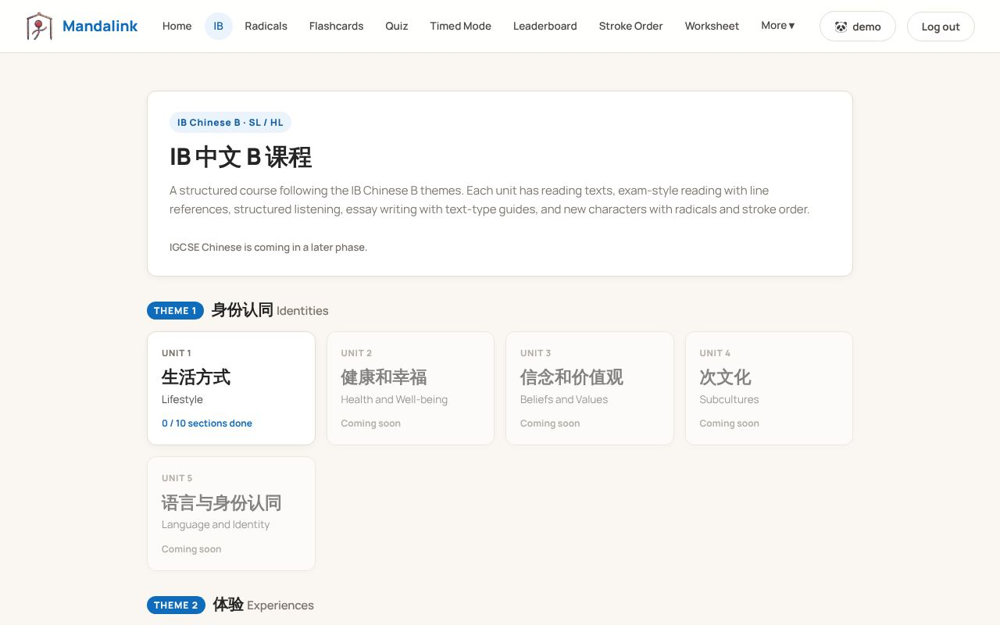
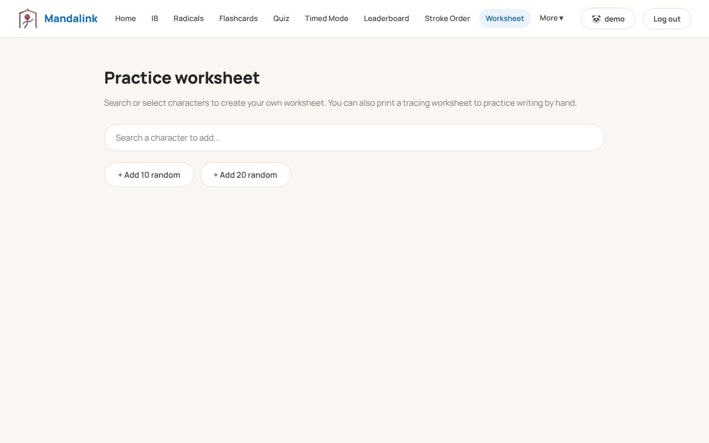
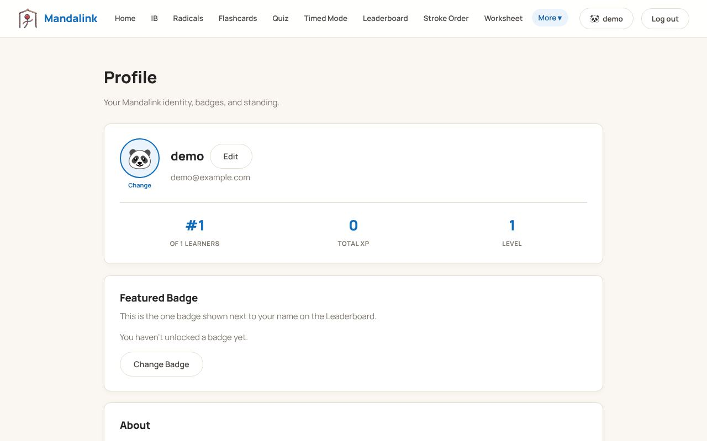

Learn the building blocks of Mandarin.
Mandalink teaches Chinese through its 214 Kangxi radicals, the small pieces that keep turning up inside characters. I built it, then rebuilt it from scratch. This is how it works, and why it was built twice.
On iPhone: open mandalink.org in Safari, tap Share, then Add to Home Screen. No App Store needed.
Spot the radical, get a clue
Most learners memorise characters one at a time. But most characters are built from a small set of parts called radicals, and the radical usually hints at what a character is about.
Learn the radicals first and an unfamiliar character stops looking like random strokes. It turns into a combination of parts you already know. I’ve studied Mandarin for seven years, and Mandalink is built around that idea.
妈 (mum) takes its meaning from 女, the woman radical, and its sound from 马 (mǎ). Neither part is random.
Tap a radical to flip it. These twelve come from Mandalink’s own list of all 214.
Everything at mandalink.org
The current version, Mandalink2, is a full learning site with accounts, progress and a community.
All 214 radicals
Browse and search them with pinyin and meaning, plus a radical of the day.
Flashcards, quizzes and timed mode
Three ways to drill the radicals, from flipping cards to racing the clock.
Stroke order
Animated, interactive stroke practice powered by Hanzi Writer.
AI radical tutor
Ask questions about radicals and get answers from a model running on the Groq API.
Printable worksheets
Pick radicals and how many practice boxes each one gets, then print a writing sheet.
IB Chinese and study tracks
A course section following the IB Chinese B themes and units (Unit 1, 生活方式 Lifestyle, so far), and General, IB and IGCSE study tracks saved to your account.
XP, levels and a leaderboard
Every answer earns XP, and other learners’ profiles are a click away.
Achievements and badges
Featured badges, timed badge drops, quest badges and a Hall of Fame.
Announcement board
News posted from the admin dashboard, which can be embedded on other sites. It powers the news on rayanupadhyay.com.
Why I threw the first version away
The first Mandalink worked. But it was built in a way that made every new feature harder than the last, so instead of patching it I started again.
One Python app
A single Streamlit app: learn, flashcards, a guess-the-meaning game, timed mode, stroke order, AI help and pronunciation, with accounts, XP and a leaderboard.
- Interface
- Streamlit
- Data
- pandas, a CSV of radicals; users in PostgreSQL (after CSV, then SQLite)
- AI help
- Groq, Llama 3.3 70B
- Audio
- Edge text-to-speech, cached
- Hosting
- Render
A front end and an API
A React app talking to a Java REST API, with real pages, proper sign-in and room to grow. It runs at mandalink.org.
- Front end
- React 18, Vite, React Router, Hanzi Writer
- Back end
- Java 17, Spring Boot 3.3, JWT sign-in
- Database
- PostgreSQL
- AI help
- Groq
- Hosting
- Render (Docker, a static site and Postgres)
Same idea, rebuilt
Both versions, running from their own code, on the same screens. Drag the handle (or use the arrow keys) to compare.
Only in version 2



Screenshots taken by running each version’s code locally with a test account, so the leaderboards and scores are empty.
How the pieces fit
The browser only ever talks to the API. The API owns the data and the outside services.
From the commit history
Dates are when work landed in the two GitHub repositories.
- Version 1 goes on GitHubThe first Python and Streamlit version is uploaded to MyChineseApp, my first repository.
- Online on RenderA start script so Streamlit runs on Render.
- Version 1’s busiest month46 commits: the app at its biggest, and at the limits of Streamlit.
- The rebuild startsMandalink2’s first commit: a React front end, a Spring Boot API and a Dockerfile for Render.
- A communityBadge drops, analytics, a Staff badge, clickable profiles, bio and username moderation, photo uploads approved by an admin, and the achievement system.
- QuestsQuest badges and a Hall of Fame.
- AnnouncementsAn announcement board with admin posting, and an embed for rayanupadhyay.com.
- IB ChineseThe IB course section with Unit 1, a new seal logo, and General, IB and IGCSE study tracks saved to accounts.
Version 1: 80 commits in MyChineseApp. Version 2: 53 commits in Mandalink2 so far.
Try it yourself
Free, in your browser at mandalink.org, or with the Android app, which opens the same site full-screen. On iPhone, open it in Safari and tap Share, then Add to Home Screen.